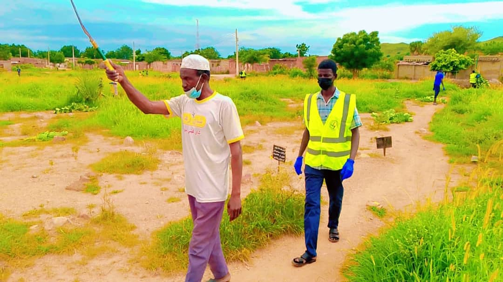

تمت المشاركة في حمله الاصحاح البيئي لمقابر قعر الحجر

بسم الله الرحمن الرحيم السلام عليكم ورحمه
الله وبركاته بحمد الله تعالى
وتوفيقه تمت الانطلاقة لحملات الاصحاح البيئي إبتدأ بمقابر قعر الحجر وذلك
فى يوم السبت الموافق 15/82026 في تمام الساعة ال7:00 صباحا تحت شعار
( إكرام الميت دفنه ونظافه مثواه )
وكان اليوم حافل وجميل وتمت اذاله شجر العشر بالكامل ورش الحشائش والنباتات المختلفه بالمبيدات ( الدمار الشامل) وشرف هذا البرنامج اذاعه ولايه جنوب كردفان صوت المحبة والسلام والاعلامى المطبوع (عمنا ابيض) وكان الحضور مميز ومشرف بمساندة من مواطنى الأحياء المجاورة للمقابر وعمت الفرحه والسرور لمواطنى الأحياء المجاورة وتحدث عصمت موسي حريكه ( ابوالنار ) بإسم الشبكة الموحدة لغرف الاستجابة للطوارئ عن مجريات هذه الحمله وقال بأنها بدأت بالمقابر للجوانب الانسانيه وإكرام الموتى وأشار بمو اصلتها لتشمل جميع الأحياء بالولاية ودعما لمجهودات طوارئ الخريف وناشد الجهات المختصة واللجان الشعبيه ومنظمات المجتمع المدني ودعا المواطنين في محافظة كادقلي وبنائها بالخارج لدعم هذه الحمله لعكس الوجه المشرق والحضارى لهذه الولاية وعلى جميع الجهات الرسميه الوقوف مع هذا الدور الكبير والمساندة في

العمل الطوعي والانسانى وسنواصل هذه الحمله بروح التعاون والتأزر لبناء ثقافه وراثيه للأجيال القادمة إنشاءالله.